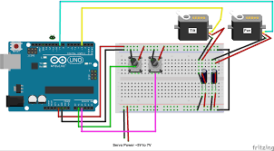

In this project, we will use a 2-axis analog joystick (like the ones found on game controllers) to control two servo motors simultaneously. This setup is often used for "Pan and Tilt" camera mounts or controlling a robotic arm.
1. Concept and Description
In this project, we will use a 2-axis analog joystick (like the ones found on game controllers) to control two servo motors simultaneously. This setup is often used for "Pan and Tilt" camera mounts or controlling a robotic arm.
2. Components Needed
Arduino Uno Board
USB Cable
2x Micro Servo Motors (SG90)
Analog Joystick Module
Jumper Wires
Pan/Tilt Bracket (optional, or tape servos together)
3. Physical Montage (Wiring Instructions)

Connect the components as follows:
Joystick VCC to 5V
Joystick GND to GND
Joystick VRx to Pin A0
Joystick VRy to Pin A1
Joystick SW (Switch) - Not used in this project
Servo 1 (Pan) Signal to Pin 9
Servo 2 (Tilt) Signal to Pin 10
Servos Power to 5V
Servos Ground to GND
4. The Code (Arduino Sketch)
Copy and paste the code below into your Arduino IDE.
#include
Servo panServo; // create servo object for Pan (Left/Right)
Servo tiltServo; // create servo object for Tilt (Up/Down)int joyX = A0; // Joystick X-axis connected to A0int joyY = A1; // Joystick Y-axis connected to A1int xVal, yVal; // variables to read the valuesvoid setup() {
panServo.attach(9); // attaches the pan servo on pin 9
tiltServo.attach(10); // attaches the tilt servo on pin 10
}
void loop() {
// Read joystick values (0-1023)
xVal = analogRead(joyX);
yVal = analogRead(joyY);
// Map joystick values to servo angles (0-180)// Note: You might need to swap 0 and 180 if the servo moves in the wrong directionint panAngle = map(xVal, 0, 1023, 0, 180);
int tiltAngle = map(yVal, 0, 1023, 0, 180);
// Write angles to servos
panServo.write(panAngle);
tiltServo.write(tiltAngle);
delay(15); // Short delay for stability
}